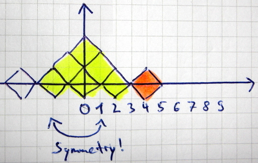
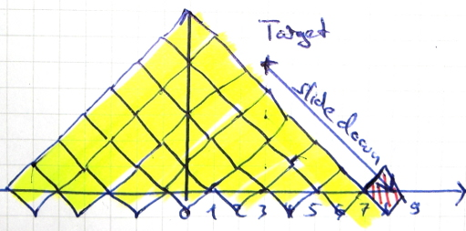

- Problem A (Osmos):
- Small Set: 4668/7250 users (64%)
- Large Set: 3537/4578 users (77%)
- Problem B (Falling Diamonds):
- Small Set: 952/1882 users (51%)
- Large Set: 525/724 users (73%)
- Problem C (Garbled Email):
- Small Set: 444/896 users (50%)
- Large Set: 255/345 users (74%)
More information is on go-hero.net.
Osmos
#!/usr/bin/env python
# -*- coding: utf-8 -*-
def howBigDoIget(A, motes):
while len(motes) > 0 and A > min(motes):
A += min(motes)
motes.remove(min(motes))
return A
def stepsNeededForNext(A, motes):
m = min(motes)
steps = 0
if m >= 1 and A == 1:
return 10 ** 12
while A <= m:
A += A - 1
steps += 1
return steps
def solve(A, motes):
steps = 0
A = howBigDoIget(A, motes)
while len(motes) > 0 and A <= max(motes):
if stepsNeededForNext(A, motes) >= len(motes):
steps += len(motes)
return steps
else:
A += A - 1
A = howBigDoIget(A, motes)
steps += 1
return steps
if __name__ == "__main__":
testcases = input()
for caseNr in range(1, testcases + 1):
A, N = map(int, raw_input().split(" "))
motes = sorted(map(int, raw_input().split(" ")))
copyed = motes[:]
solution = solve(A, motes)
if solution > N:
solution = N
print("Case #%i: %s" % (caseNr, solution))
Falling Diamonds
Once you've read the task, you should understand some very basic ideas:
- First of all, diamonds only fall at $x=0$ !
- If your target coordinates are $(x,y)$ , you have the same output as for $(-x,y)$ , as everything is symmetric.
- You have to get a basis for your diamonds' pyramid. I've colored the basis in yellow in the images below.
- When your target is above the ground, you can let the diamond slide down to calculate the size of the basis.
{kind=link}

{kind=link}

Note that you don't have to calculate a probability for the yellow pyramids. You get those with probability of 1.
What I've forgotten: You should also catch the case that you can fill up the next bigger pyramid. If this is possible, you can guarantee that you will reach your target \((x,y)\).
The rest is simple math. You have \(rest\) diamonds left after you've build the base (yellow). Then you need \(y+1\) diamonds slide to the right side. The probability that you have exactly \(k\) hits while making \(N\) tries with a probability of 50% is \(\binom{N}{k} \cdot (\frac{1}{2})^N\). You want at least \(k\) hits, so you want \(\sum_{i=k}^N \binom{N}{i} \cdot (\frac{1}{2})^N\).
#!/usr/bin/env python
# -*- coding: utf-8 -*-
import gmpy
""" Calculate the binomial coefficient """
def binomial(n, k):
return gmpy.comb(n, k)
def solve(N, x, y):
"""
@param N: Number of diamonds
@param x,y: Target coordinate
@return: possiblity, that a diamond will be at coordinate (x,y)
"""
if x == 0:
n = y + 1
if N >= (n * n + n) / 2:
return 1.0
else:
return 0.0
# From this point, x != 0 is True
xTmp = x + y # let target slide down
n = xTmp - 1
baseDiamands = (n ** 2 + n) / 2
# are there enough diamonds left after you've build the basis?
rest = N - baseDiamands
if rest <= 0:
return 0.0
# are there enough diamonds left so that you can guarantee that
# you will fill up the next bigger pyramid at least to the
# target position?
biggerBaseDiamonds = baseDiamands + n + 2 + y
if N >= biggerBaseDiamonds:
return 1.0
# some math:
# bernoulli
prob = 0.0
hitsNeeded = y + 1
for k in range(hitsNeeded, rest + 1):
prob += binomial(rest, k)
return prob / 2 ** rest
if __name__ == "__main__":
testcases = input()
for caseNr in range(1, testcases + 1):
N, x, y = map(int, raw_input().split(" "))
print("Case #%i: %.9Lf" % (caseNr, solve(N, abs(x), y)))